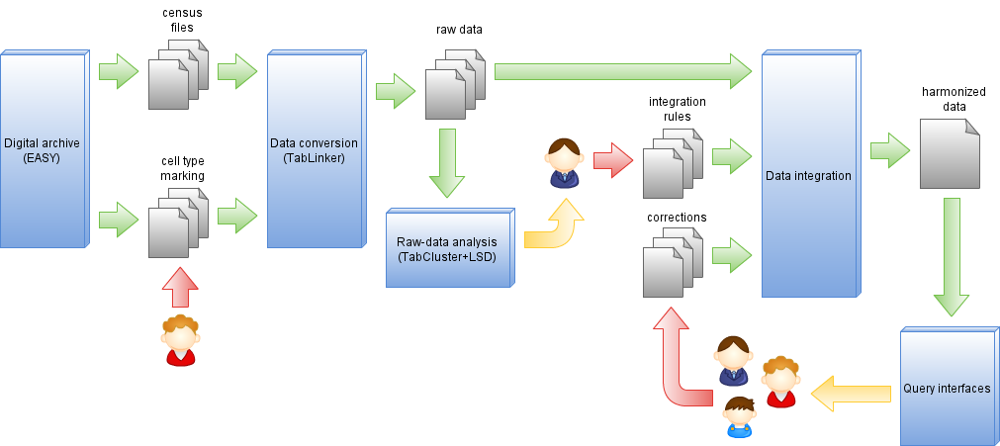

The following picture illustrates the data integration process. Starting from Excel files which contain the transcription of the census books we generate a set of "raw-rdf". This process requires a manual input (red arrow) which consists in annotating the cells with the type of content they contain, this is necessary to deal with the heterogeneity of the files. Once the raw rdf files are created they are integrated following a number of harmonization rules produced by historians. Eventual corrections about the content are also taken into consideration at that stage.
Here is an example for one observation picked at random